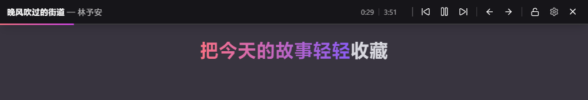
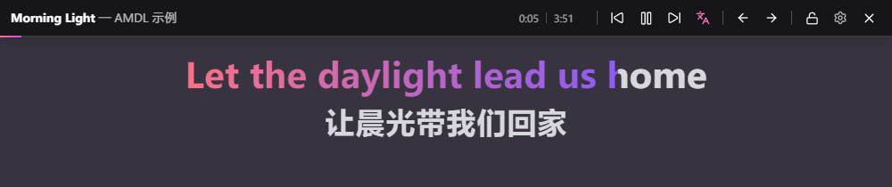
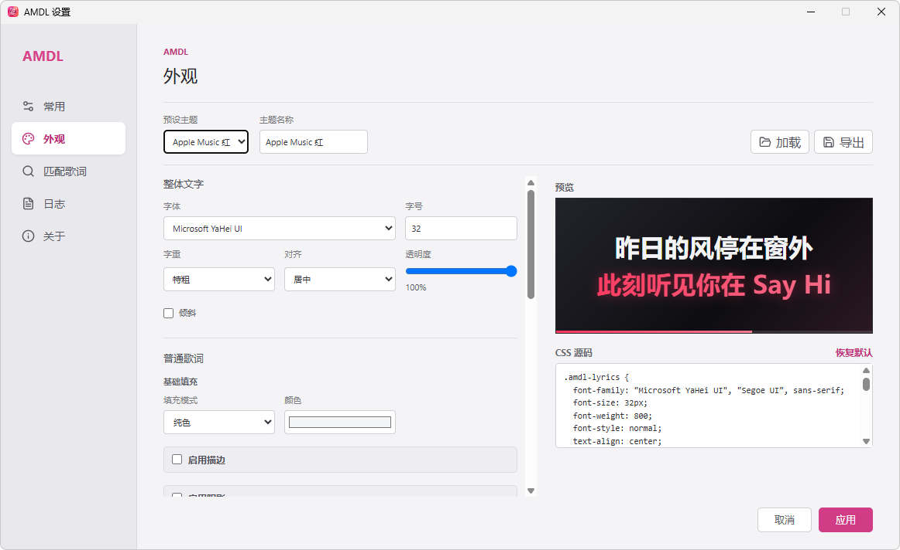
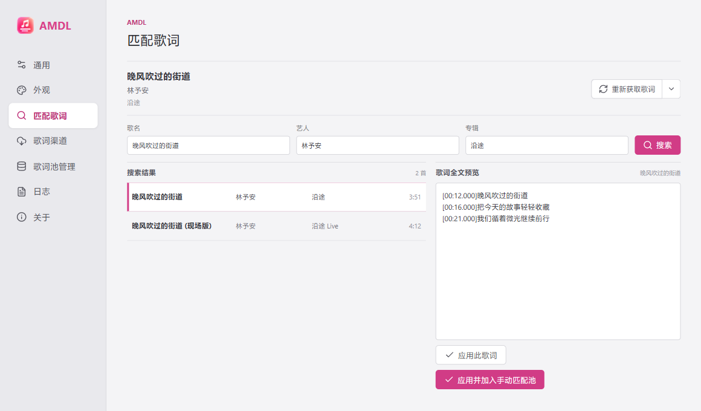
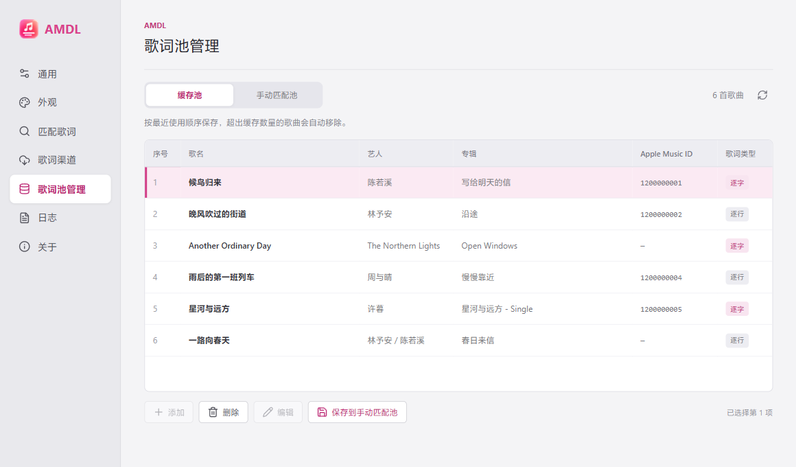

AMDL 快速入门
适用于 AMDL 1.0.2。从安装到第一句桌面歌词，按下面的步骤开始，再按自己的习惯调整翻译、注音、渠道和外观。
本页目录
1. 下载并安装
AMDL 适用于 Windows 10 / 11 x64，需要电脑上安装 Windows 版 Apple Music。下载最新安装包，按安装向导完成安装即可。
下载 AMDL Windows 版 ↗最新版本见 Release
首次打开后，AMDL 会在系统托盘运行。以后可从托盘图标打开设置或控制歌词面板。
2. 播放第一首歌
启动 Apple Music Windows 客户端并播放一首歌，AMDL 会读取当前歌曲信息、匹配歌词，再在桌面显示。如果暂时只看到歌名和艺人，先等歌曲播放片刻，再检查下方的歌词渠道设置。

3. 选择歌词渠道
打开设置的歌词渠道页面，可以启用渠道并调整优先级。当前可用的来源包括 Apple Music 官方 API、Apple Music Windows 客户端本地缓存、QQ 音乐，以及你保存的手动匹配池。显示逐字还是逐行，取决于实际找到的歌词内容。
Token 是可选配置。只有使用 Apple Music 官方 API 歌词渠道时，才需要配置 Apple Music 授权信息。希望获取官方接口提供的 TTML 逐字歌词，可按照 获取 Token 教程设置；其他渠道不依赖个人 Token。
“Apple Music 本地缓存”是客户端自己的缓存，和 AMDL 设置中的“缓存池”是两回事：前者是歌词来源，后者用于保存 AMDL 近期获取的歌词，减少重复请求。
可在通用设置中调整获取失败时最大重试次数，范围为 0～5，默认 3；0 表示首次失败后不再自动重试。
4. 打开翻译与注音
当获取到的官方歌词包含翻译或注音时，控制条的“下一曲”右侧会出现翻译图标。只有一种内容时，点击图标即可开关；两种都有时，在弹出菜单中分别选择。
在通用设置的当有歌词翻译/注音时选择默认关闭、优先翻译或优先注音。手动开关在本次运行中分别保留，切歌后继续生效；两项均手动开启时优先显示翻译，重启后重新采用默认偏好。

内容是否可用取决于官方歌词数据。新版 Apple Music 的逐字缓存也可提供这些内容；使用官方 API 渠道时仍需按教程配置 Token。
5. 调整外观与歌词时间
在设置的外观页面调整字体、字号、颜色、渐变、高亮和阴影；支持导入或导出 .amdlcss 主题。完成修改后点击保存并生效。

如果歌词整体偏早或偏晚，可用歌词面板上的提前 500ms、延后 500ms按钮微调，也可以在设置里输入歌词显示偏移值。负值让歌词提前，正值让歌词延后。
6. 歌词不对时重新匹配
在设置的匹配歌词页面点击重新获取歌词，AMDL 会按当前渠道设置重新读取缓存、匹配歌曲，并依照优先级获取和显示歌词。按钮右侧的小菜单可以单独重新获取 AM API、本地缓存或 Q 音歌词。
如果自动匹配的版本不对，搜索歌曲并预览候选歌词。选择应用此歌词会立即使用它；选择应用并加入手动匹配池还会把这次选择保存，供以后播放使用。

7. 管理缓存池与手动匹配池
缓存池保留最近使用的歌曲歌词，容量可在通用设置中调整。缓存条目不能直接编辑，但可以选中后保存到手动匹配池。
手动匹配池保存你确认的歌词。可添加新歌词、编辑歌名与艺人等歌曲信息、填写 Apple Music 歌曲 ID，或粘贴 TTML / LRC 歌词。保存时 AMDL 会检查格式并解析为逐字或逐行歌词，翻译与注音也会一并保留。列表中的彩色标签可帮助判断已有内容。

8. 放到合适的桌面位置
拖动并调整歌词面板尺寸，让它避开你正在使用的窗口。锁定后，鼠标移到歌词面板顶部可显示解锁按钮；系统托盘菜单也能解锁。
在通用设置或托盘菜单中切换保持歌词面板置顶。如果面板跑到了其他显示器或屏幕外，可用托盘菜单的重置歌词面板位置，把它恢复到主显示器上的默认位置和尺寸。
遇到问题？
- 没有歌词：确认 Windows 版 Apple Music 正在播放、歌词渠道已启用，并尝试“重新获取歌词”；也可先在 Apple Music 打开当前歌曲的歌词，再重试。可在设置的日志页查看命中的渠道与处理结果。
- 只显示逐行：说明当前来源仅提供逐行时间信息；尝试启用其他渠道或手动匹配有逐字时间标签的歌词。
- 官方 API 突然无法使用：可在歌词渠道页查看开发者 Token 到期时间，并检查用户 Token 是否仍有效，并参考 获取 Token 教程重新设置。
- 歌词面板找不到：从系统托盘选择“重置歌词面板位置”。
还需要帮助？可在 GitHub Issues 描述遇到的问题。